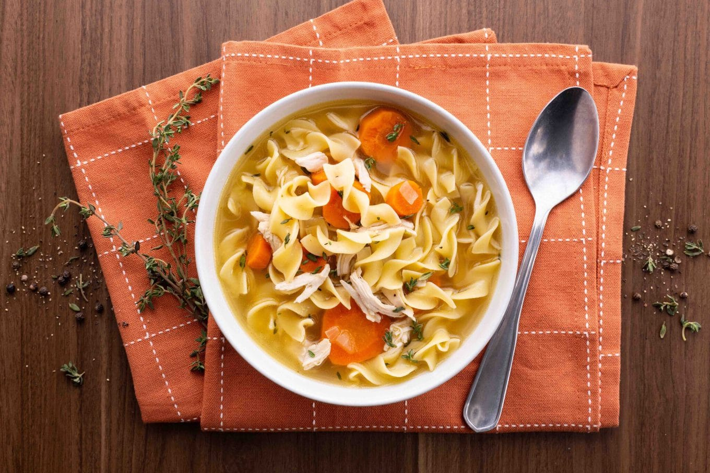

Comforts busy people since the evolution of chickens

Hot coding night comfort
30 minutes and nostalgic flavors will fuel your tired mind and warm your aching heart.
Perfect recipe that pours love for your close ones and yourself.
Ingredients
2.5 tablespoons (34g) oil
1 kg chicken (breast, thigh, or both/ Optionally skin on)
1 tablespoon (14g) unsalted butter
1 onion
3 carrots
4 celery ribs
2.3 liters good chicken stock
1/2 bundle fresh thyme
1 bunch fresh parsley stems
1/2 bundle fresh sage
225g pasta of choice
salt and pepper to taste
Instructions
Heat oil in a large enough stock pot over medium - high heat until nearly smoking. Sear all pieces of chicken for 3 minutes per side or till golden brown and place to the side. The chicken will still be raw in the center, don’t worry.
Once all the chicken has been seared, add butter to the pot and cook for 2-3 minutes or until lightly browned.
Add your onion, carrots, and celery, and saute for 3 minutes or just until the onions begin to turn translucent. Add chicken stock.
Turn the heat to high, and as soon as it begins to come to a boil immediately reduce the heat to low and bring to a simmer.
Wrap your thyme, parsley stems, and sage in a piece of cheese cloth secured by a piece of kitchen twine. Add the herbs to the simmering stock along with all the pieces of chicken and the juices accumulated.
Simmer for 20 minutes or until chicken is cooked through.
Remove chicken from the pot and place to the side. Cook your pasta according to package instructions minus 2-3 minutes.
Once your chicken is cool enough to handle, shred it by hand and add it back to the stock along with the cooked noodles. Season to taste with salt and pepper.